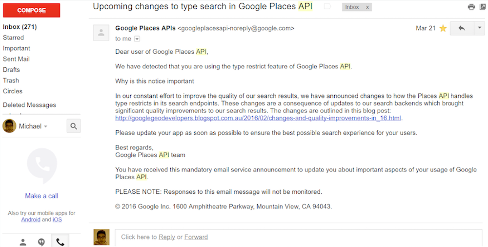
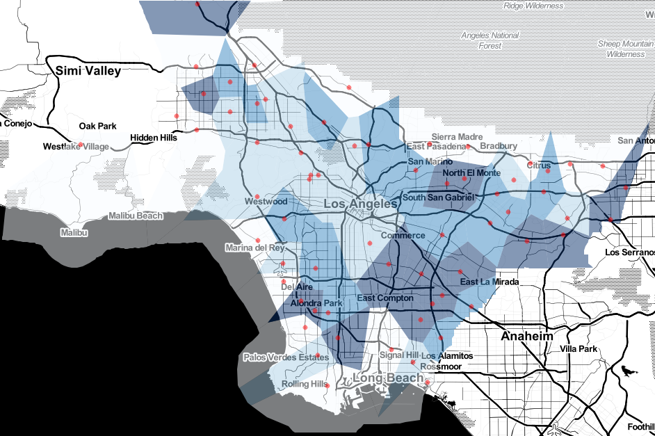
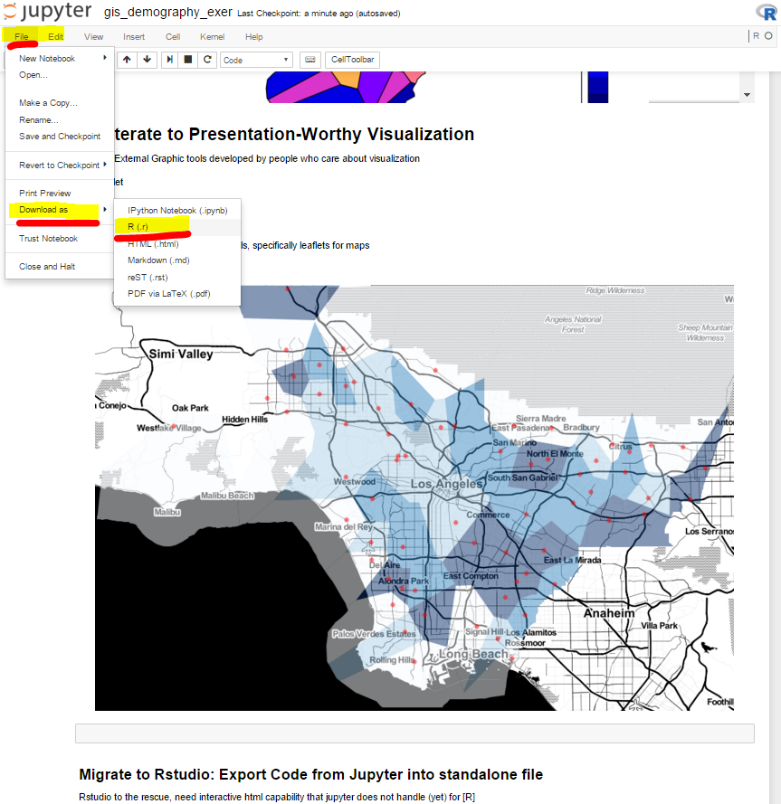

As part of the Commerce Data Usability Project, [Insert Description Here] If you have question, feel free to reach out to the Commerce Data Service at DataUsability@doc.gov.
Introduction
UCLA CCPR Workshop
Practical GIS for Demography
To accompany the software-agnostic content of the slides, these specific exercises are in [R]
We also highlight some alternative software in the "Miscellaneous" section at the end
# this only has to be done once (as the root ubuntu user)
# get 'gdal' needed for 'rgdal' and 'rgeos'
# http://robinlovelace.net/r/2013/11/26/installing-rgdal-on-ubuntu.html
# aptitude better package manager than apt-get for gdal
# sudo apt-get update
# sudo apt-get install aptitude
# sudo aptitude install libgdal-dev
# sudo aptitude install libproj-dev# choose rstudio as source package repository
# options(repos = c(CRAN = "http://cran.rstudio.com"));
# install.packages('deldir')
# install.packages('dplyr')
# install.packages('jsonlite',dependencies=TRUE)
# install.packages('maptools')
# install.packages('rgeos')
# install.packages('rgdal',dependencies=TRUE)
# install.packages('leaflet')Step 0: For reproducible environment: ?sessionInfo to display packages and versions
library(dplyr)
library(jsonlite)
library(maptools); gpclibPermit()
library(deldir)
library(rgeos)
library(rgdal)
library(leaflet)
sessionInfo()Step 1: Obtain Census TIGER Tract Polygons, Use Census Bureau API to obtain 2010 Population Count, Use Google Radar API to obtain GPS points
a. Tract Polygons via shapefile format
Download Tiger Tract Shapefiles (Manually)
'tl_2015_06_tract.zip'
http://www.census.gov/geo/maps-data/data/tiger-line.html
http://www2.census.gov/geo/tiger/TIGER2015/TRACT/
http://www2.census.gov/geo/tiger/TIGER2015/TRACT/tl_2015_06_tract.zip
Try this with 2010 shape files, see if 2 to 1 tract redundancy still present probably, since issue was with datatable from census api, not shape file
# an [r] command to tell linux shell to 'download' a file from a url
# system() --> wget --> url
# download
# system('wget http://www2.census.gov/geo/tiger/TIGER2015/TRACT/tl_2015_06_tract.zip')
# unzip
# system('mkdir -p ~/notebooks/gis_demog_misc')
# system('unzip /notebooks/gis_demog_misc/tl_2015_06_tract.zip -d ~/notebooks/gis_demog_misc/tl_2015_06_tract')# to bring up r's help manual, use syntax "?function_name"
?readShapeSpatial#################
# shapefile - tract
#################
# library(maptools)
# directory location of shapefiles
shapefile_location = '~/notebooks/gis_demog_misc/tl_2015_06_tract/'
ca_shp <- readShapeSpatial(paste0(shapefile_location,'tl_2015_06_tract.shp'))
# specify projection
proj4string(ca_shp) <- "+proj=longlat +datum=WGS84"
plot(ca_shp)
# notice how long it takes, shapefiles are "bloated"names(ca_shp)
# just subset to la county
la_county = subset(ca_shp, ca_shp$COUNTYFP == '037')
plot(la_county)Custom "Cropping" to further focus in on LA City (who cares about Catalina, unless you're headed to the Catalina Wine Mixer)
NOTE:
The [R] function ?locator() does NOT work inside jupyter notebook
This would allow us to interactively input point-and-click points on the plot
If it did, the code to do it is below
We can try it later, when we migrate to Rstudio
#################
# shapefile - tract
#################
# plot(la_county)
# locator to interactively choose points of convex hull for custom bbox
# Click points to draw your own custom boundary then hit keyboard 'esc' to finalize
# chull_locat = locator()
# plot(chull(chull_locat))
# use the new custom boundary points to crop out ignored areas
# library(spatstat)
# bbox_cust = bounding.box.xy(chull_locat)
# bb_poly <- as((bbox_cust), "SpatialPolygons")
# proj4string(bb_poly) <- CRS(proj4string(la_county))
# library(raster)
# la_county_zoom = raster::crop(la_county,bb_poly)
# plot(la_county_zoom)
# save(la_county_zoom,file='/notebooks/gis_demog_misc/la_county_zoom_tvmagic.RData')"TV Magic" I applied the custom boundary cropping for you
load("~/notebooks/gis_demog_misc/la_county_zoom_tvmagic.RData")
plot(la_county_zoom)Use LA County's border as our "Boundary" (keep on deck for later)
That is, dissolve the interior polygons.
The county border will be our 'closed jordan curve' that partitions interior and exterior regions
Jordan Curve Theorem: A closed curve divides a space into: Interior, Boundary, and Exterior
https://en.wikipedia.org/wiki/Jordan_curve_theorem
####################
# get la county bdry
# ?rgeos::gUnionCascaded to dissolve interior polygons
####################
# plot(la_county_zoom)
# library(rgeos)
la_county_bdry = rgeos::gUnionCascaded(la_county_zoom)
plot(la_county_bdry)b. Obtain Census 2010 Tract Level Counts via API
http://api.census.gov/data/key_signup.html
http://api.census.gov/data.html
Check your email for the api key, going to need it below
# Plug in your API Key (Census API)
api_key_census = 'foo_your_key' # blank outbase_url_census = 'http://api.census.gov/data/2015/pdb/tract?get='
query = paste0(base_url_census,
'Tot_Population_CEN_2010&for=tract:*&in=state:06+county:037&key=',
api_key_census)
# library(jsonlite)
dat_raw_census = fromJSON(query)
str(dat_raw_census)
# use first row of matrix as variables' name (column names) for data frame
colnames(dat_raw_census) = dat_raw_census[1,]
dat_raw_census = dat_raw_census[-1,]
str(dat_raw_census)
head(dat_raw_census)
dat_census = data.frame(Tot_Population_CEN_2010 = as.numeric(dat_raw_census[,1]),
state = as.character(dat_raw_census[,2]),
county = as.character(dat_raw_census[,3]),
tract = as.character(dat_raw_census[,4]),
stringsAsFactors=FALSE
)
head(dat_census)c. In-N-Out GPS points via API call to Google Radar
https://developers.google.com/places/web-service/search#RadarSearchRequests
https://developers.google.com/places/web-service/get-api-key
Check your google account for the api key, going to need it below
Benefit of API
Pro: A week ago, I got an email notice from Google Radar API saying a particular 'rule of engagement' was changed
Great! Using Data in the Wild, it's rare to have the data provider let you know up to date documentation

# Plug in your API Key (Google Radar API)
api_key_radar = 'foo_your_key' # blank outTo get complete spatial coverage of LA County, choose 3 landmark points for Google Radar
Right Click -> "What's here?"
Up to you, but I used
- latitude,longitude
- 34.20306,-118.3817
- 33.92515,-117.5191
- 33.78619,-117.8751
api_key=api_key_radar
keyword='in-n-out'
types='food'
radius='50000' # 50000 meters (about 31 miles)
# location='34.072422,-118.0776237' # 'lat,lng' order # rosemead # landmark3# Google's API documentation tells us to treat
# each gps point as a text string of "latitude,longitude"
# Since we're going to 'glue' the string into a website URL
landmark1 = "33.78619,-117.8751"
landmark2 = "33.92515,-117.5191"
landmark3 = "34.20306,-118.3817"
class(landmark1)What are the useful API outputs?
# result example for 1 landmark
location = landmark1
call_url = paste0('https://maps.googleapis.com/maps/api/place/radarsearch/json?',
'location=',location, # 'lat,lng' order
'&radius=',radius,
'&types=',types,
'&keyword=',keyword,
'&key=',api_key
)
# library(jsonlite)
# ?jsonlite
dat_raw = fromJSON(call_url)
str(dat_raw)
dat_raw$results$geometry$location$lat
dat_raw$results$geometry$location$lng
plot(y=dat_raw$results$geometry$location$lat,
x=dat_raw$results$geometry$location$lng
)
# wrap into function so we can iterate over the 3 landmarksWrap into a custom function so we can iterate over the 3 landmarks
get_gps_custom_func = function(your_landmark){
location = your_landmark
call_url = paste0('https://maps.googleapis.com/maps/api/place/radarsearch/json?',
'location=',location, # 'lat,lng' order
'&radius=',radius,
'&types=',types,
'&keyword=',keyword,
'&key=',api_key
)
library(jsonlite)
# ?jsonlite
dat_raw = fromJSON(call_url)
# str(dat_raw)
dat_relevant = cbind(dat_raw$results[-1],
location.lat=(dat_raw$results$geometry$location$lat), # explicit redundancy helpful (already in results)
location.lng=(dat_raw$results$geometry$location$lng)
)
return(dat_relevant)
}list(landmark1,landmark2,landmark3)# apply our custom function to iterate over the list of 3 landmarks
# basically a 'for-loop' but cleaner syntax
out_landmark_123 = lapply(list(landmark1,landmark2,landmark3),
get_gps_custom_func
)str(out_landmark_123)
# ?rbind_all row binds the elements of the input list into a single output data frame
dat_all = rbind_all(out_landmark_123)
class(dat_all)
dim(dat_all)
head(dat_all)Remove duplicate In-N-Out's via unique identifier 'place_id'
Since we used 3 landmarks, their circles with 50000 meter radii (31 mi) will overlap
names(dat_all)
nrow(dat_all)
dat_all$place_id %>% unique() %>% length()
# alternative to determine unique()
# duplicated(dat_all$place_id)
# !(duplicated(dat_all$place_id))# since we used 3 landmarks, their 5000 km circles will overlap
# remove duplicate in-n-out via unique identifier 'place_id'
names(dat_all)
# library(dplyr)
dat_all_uniq = dat_all %>%
dplyr::distinct(place_id) %>% # alternative to uniqe() and !duplicated()
dplyr::select(location.lng,location.lat,place_id)
# note: now in (lng,lat) order, for later processing (later on will expect data.frame() format)
# we could easily convert it here as well
head(dat_all_uniq)
class(dat_all_uniq)
dim(dat_all_uniq)
# use google 'place_id' as row names, to keep track of points
row.names(dat_all_uniq) = dat_all_uniq$place_id
# with row names assigned, no need for place_id as a column
dat_latlng = dat_all_uniq %>%
select(-place_id)
head(dat_latlng)
row.names(dat_latlng)
# we explicitly save the points later when we migrate
# save(dat_latlng,file='/notebooks/gis_demog_misc/dat_latlng.RData')Step 2: Link the 2010 Census Population Data with Tract Polygons
a. Shapefile is set of Tract Polygons
b. Census Data is a table of population counts indexed at Tracts
Link via Tract FIPS code
In [R], the SpatialFoo*DataFrame object is just formal book-keeping device to keep shapes linked with the data table in a single object (Same motivation for "Shapefile" .shp)
As seen earlier, a benefit of using this formal object is the easy to use functionality like plotting and subsetting of these Spatial-Data Objects
Handy thing to keep in mind - figure out the value added of using a formal structure.
If there's no functionality to benefit from, why bother?
class(la_county_zoom)?SpatialPolygonsDataFrameExamine the structure, str(), What is the most important contents?
clue: order/rank of the items
str(la_county_zoom)
# 2213 data rows
# 2213 polygonsFrom the SpatialFoo*DataFrame, let's extract only the @data (data frame) to modify its tabular contents
Linking Spatial Shape to Data Can be broken down into smaller steps:
- Extract data table from spatial-data object
- Merge tabular data with new census data
- Re-insert data table into spatial-data object
Therefore, the key step is the "Merge" Process (2) operating on tables
http://r4ds.had.co.nz/relational-data.html
# load("/notebooks/gis_demog_misc/la_county_zoom_tvmagic.RData")
# plot(la_county_zoom)
# the spatial-object came with pre-existing data in its data slot
str(la_county_zoom@data)
dim(la_county_zoom@data)
head(la_county_zoom@data)
# our census data that we wish to merge, then inject
dim(dat_census)
head(dat_census)# make new variable 'GEOID' for census dataset
# eg glue together: state,county,tract
dat_census2 = dat_census %>%
mutate(GEOID=paste0(state,county,tract)) %>%
select(GEOID,TRACTCE=tract,Tot_Population_CEN_2010) # rename 'tract' to 'TRACTCE' to agree with naming convention
head(dat_census2)
head(la_county_zoom@data)
names(la_county_zoom)
class(la_county_zoom)
names(dat_census2)
class(dat_census2)dim(la_county_zoom) # less number of tracts (than census api) because we 'zoomed' in via custom points
dim(dat_census2)'maptools' to quickly identify any quirks between SpatialFoo*DataFrame and New Tabular Data
- ?spChFIDs to use variable "GEOID" as id for spatial polygons
- use variable "GEOID" as rownames for census table
- ?spCbind to "column bind" census table to spatial polygons via "GEOID"
?spCbindInvestigate 1 extra tract
dat_census2 %>% filter(GEOID == '06037800204')# 'spooky behavior' that number of tract mismatch error is not an issue when using spCbind
# obviously two observations in census table have tract '800204' (geoid '06037800204') (1 is NA 1 is 6740)
# see the two blank tracts in western pan handle
# if we explicitly remove the one that is missing NA
# now, just one blank tract (the correct NA one we skipped)
ind_error = which((dat_census2$GEOID == '06037800204') & is.na(dat_census2$Tot_Population_CEN_2010 == TRUE))
dat_census3 = dat_census2[-ind_error,]
dat_census3 %>% filter(GEOID == '06037800204')
# la_county_zoom[865,'GEOID']
# la_county_zoom[866,'GEOID']
# plot(la_county_zoom[865,])
# plot(la_county_zoom[866,])dat_census2 %>% filter(GEOID == '06037800204')
# dat_census2_subset %>% filter(GEOID == '06037800204') # this did matching, which default removed the 6740, while keeping NA
dat_census3 %>% filter(GEOID == '06037800204')# annoying that we have to dive into rowname of spdf too
# but good assertion check to make sure polygon ID linked to Data ID correctly
xx = la_county_zoom # spatial polygon data frame
xtra = dat_census3 # data frame of new variables
# we just wrote the two lines above
# to shoehorn our right hand side objects to the naming convention of examples
# all of below is copy/paste example from ?spCbind
# explicitly get rows that have matching GEOID
o = match(xx$GEOID, xtra$GEOID)
length(o)
dim(xtra)
xtra1 <- xtra[o,]
dim(xtra1)
# use geoid as rowname of spatialfoo
# hidden annoyance
xx <- spChFIDs(xx, as.character(xx$GEOID))
# row.names(xx)
#rownames of new dataframe
row.names(xtra1) <- xx$GEOID
# cbind spdf xx to dataframe xtra1
xx1 <- spCbind(xx, xtra1)
la_county_zoom_new = xx1
spplot(la_county_zoom_new,z='Tot_Population_CEN_2010')
# we explicitly save the spdf later when we migrate
# save(la_county_zoom_new,file='/notebooks/gis_demog_misc/la_county_zoom_new.RData')Step 3: Aggregate population count from existing Tract polygons into new Voronoi polygons
a. Use GPS points to generate their unique Voronoi Tesselation
b. Overlay Voronoi Polygon onto Tract Polygons
c. Aggregate Population Count of Tracts into new Voronoi Polygons
3a: Use GPS points to generate their unique Voronoi Tesselation
There is a 1 to 1 mapping from points to polygons
Custom Function that generates Voronoi polygons based on input points
# library(deldir)
# using bbox of poly
voronoipolygons = function(x, poly) {
require(deldir)
if (.hasSlot(x, 'coords')) {
crds <- x@coords
} else
crds = x
# bb = bbox(poly) # when is bb used, not used
rw = as.numeric(t(bbox(poly))) # using poly's bounding box for output of deldir
z <- deldir(crds[, 1], crds[, 2],rw=rw)
w <- tile.list(z)
polys <- vector(mode = 'list', length = length(w))
require(sp)
for (i in seq(along = polys)) {
# each polygon in tile list, extract coordinates
pcrds <- cbind(w[[i]]$x, w[[i]]$y)
pcrds <- rbind(pcrds, pcrds[1,]) # closed poly
cust_ind = w[[i]]$ptNum # original index that deldir outputs
cust_ind2 = row.names(x[cust_ind,]) # use original index, to look up google place id
polys[[i]] <- Polygons(list(Polygon(pcrds)), ID = cust_ind2) # use place id as polygon id
}
SP = SpatialPolygons(polys)
# return deldir::voronoi poly as spdf
voronoi = SpatialPolygonsDataFrame(SP,
data = data.frame(x = crds[, 1],
y = crds[, 2],
row.names = sapply(slot(SP, 'polygons'),
function(x)
slot(x, 'ID')
)
)
)
return(voronoi)
}# the table of gps points expects data.frame(dat_latlng) format
class(dat_latlng)
dat_latlng = data.frame(dat_latlng)
class(dat_latlng)Cosmetic step to subset dat_latlng that are only inside la county
plot(la_county_bdry)
points(dat_latlng)plot(la_county_bdry)
temp_sp = SpatialPoints(data.frame(dat_latlng))
raster::crs(temp_sp) <- raster::crs(la_county_bdry)
pts_in_la = raster::crop(temp_sp,la_county_bdry)
points(pts_in_la)head(pts_in_la)
length(pts_in_la)
length(unique(row.names(pts_in_la)))Input points in la into our voronoi custom function
names(la_county_zoom_new)
plot(la_county_bdry)
points(pts_in_la)
vor_spdf = voronoipolygons(pts_in_la,la_county_zoom_new)
plot(vor_spdf)
points(pts_in_la)row.names(vor_spdf)3(b + c): Overlay Voronoi Polygon onto Tract Polygons + Aggregate Population Count of Tracts into new Voronoi Polygons
For overlapping polygons, weighted Average of existing tract-level population count into new voronoi polygon
https://cran.r-project.org/web/packages/sp/vignettes/over.pdf
?sp::aggregatenames(la_county_zoom_new)# argument 1 is areal unit source
# argument 2 is target spatial support
# areaWeighted = TRUE, uses proportion of area overlap to weight attribute
# outputs spdf
# default function is 'mean()', hence santa monica 8000+ pop is smoothed by surrounding lower pop
# option to choose different function, sum(), to get direct counts (but cannot areaWeighted='TRUE')
# but if use 'areaWeighted = True', forced to use mean() for aggregation function
vor_agg_spdf = aggregate(la_county_zoom_new['Tot_Population_CEN_2010'], # Tot_Population_CEN_2010
by=vor_spdf,
areaWeighted = TRUE)
# spplot(vor_agg_spdf)Step 4: Visualize the population near each In-N-Out… make some maps
Jordan Curve Theorem: A closed curve divides a space into: Interior, Boundary, and Exterior
https://en.wikipedia.org/wiki/Jordan_curve_theorem
## Use LA County Boundary to crop our voronoi polygons
# avoid ?gIntersection(poly_1,poly_2, byid=TRUE)
# spooky behavior with mixing up ids
# even with: option in gIntersection(...,id=row.names(vor_agg_spdf))
# instead, use ?raster::crop
## Crop to the vor_agg_spdf extent, then plot
# crs(vor_agg_spdf) <- raster::crs(la_county_bdry)
vor_agg_spdf_crop = raster::crop(vor_agg_spdf, la_county_bdry)
# row.names(vor_agg_spdf_crop)
plot(la_county_bdry)
spplot(vor_agg_spdf)
spplot(vor_agg_spdf_crop)Step 5: Iterate to Presentation-Worthy Visualization
Elegant EXTERNAL Graphic tools developed by community who care about visualization
[R] plays nicely with these external tools.
For maps, 'leaflet' is nice
https://rstudio.github.io/leaflet/

Migrate to Rstudio: Export Code from Jupyter into standalone file
However, these interactive map tools needs interactive html capability that jupyter does not handle (yet) for [R]
Rstudio to the rescue, let's migrate to a software environment for [R] that has what we need

# str(la_county_zoom_new)
# str(pts_in_la)
# str(vor_agg_spdf_crop)
save(la_county_zoom_new,file='~/notebooks/gis_demog_misc/la_county_zoom_new.RData')
save(pts_in_la,file='~/notebooks/gis_demog_misc/pts_in_la.RData')
save(vor_agg_spdf_crop,file='~/notebooks/gis_demog_misc/vor_agg_spdf_crop.RData')In Rstudio
http://lexis.ccpr.ucla.edu:8787/auth-sign-in
With 'exported' (downloaded) standalone 'gis_demography_exer_fin_pub.r' file, now "upload" in rstudio environment
#####################
# read in the previously exported data
#####################
# jaga: linux environment
# load(file='~/notebooks/gis_demog_misc/la_county_zoom_new.RData')
# load(file='~/notebooks/gis_demog_misc/pts_in_la.RData')
# load(file='~/notebooks/gis_demog_misc/vor_agg_spdf_crop.RData')
# windows environment
# load('C:\\Users\\mtzen\\Documents\\in-n-out\\pts_in_la.RData')
# load('C:\\Users\\mtzen\\Documents\\in-n-out\\la_county_zoom_new.RData')
# load('C:\\Users\\mtzen\\Documents\\in-n-out\\vor_agg_spdf_crop.RData')
## not really needed
# load('C:\\Users\\mtzen\\Documents\\in-n-out\\la_county_zoom_tvmagic.RData')
# load('C:\\Users\\mtzen\\Documents\\in-n-out\\dat_latlng.RData')#####################
# lexis: linux environment
# Exercises: finish the code below out yourself
#####################
# load('')library(leaflet)
#############
# Example 1: choropleths of tracts
# https://rstudio.github.io/leaflet/raster.html
#############
names(la_county_zoom_new)
# define 'pal_func' to control colors
palet_func = colorQuantile(
domain = la_county_zoom_new$Tot_Population_CEN_2010,
palette = "Reds",
na.color = "transparent"
)
# build map
leaflet(la_county_zoom_new) %>%
addPolygons(
stroke = FALSE, fillOpacity = 0.5, smoothFactor = 0,
color = ~palet_func(Tot_Population_CEN_2010)
) %>%
addLegend("bottomleft",
pal=palet_func,
values = ~Tot_Population_CEN_2010,
title = "Census 2010 Pop",
opacity = 1
)# library(leaflet)
#############
# Example 1: Voronoi, Simpler
# https://rstudio.github.io/leaflet/raster.html
#############
# names(vor_agg_spdf_crop)
# names(pts_in_la)
# define 'palet_func' to control colors
palet_func = colorQuantile(
domain = vor_agg_spdf_crop$Tot_Population_CEN_2010,
palette = "Blues",
na.color = "transparent"
)
# build map
leaflet(vor_agg_spdf_crop) %>%
addPolygons(
color = ~palet_func(Tot_Population_CEN_2010),
fillOpacity = 0.6,
stroke = FALSE,
smoothFactor = 0 # optional smooth of polygon line
) %>%
addCircles(lng = pts_in_la$location.lng,
lat = pts_in_la$location.lat,
color='red',
weight = 5
) %>%
addLegend("bottomleft",
pal=palet_func,
values = ~Tot_Population_CEN_2010,
title = "Census 2010 Pop",
opacity = 1
) %>%
addProviderTiles("Stamen.Toner")# On Your Own, Using above code example, try making different maps
# ?leaflet
# ?addPolygons
# https://rstudio.github.io/leaflet/#############
# Example 2: Voronoi, More Options
# https://rstudio.github.io/leaflet/raster.html
#############
names(vor_agg_spdf_crop)
names(pts_in_la)
names(la_county_zoom_new)
# define 'palet_func' to control colors
palet_func = colorQuantile(
domain = vor_agg_spdf_crop$Tot_Population_CEN_2010,
palette = "Blues",
na.color = "transparent"
)
# build map
leaflet(vor_agg_spdf_crop) %>%
# cosmetics: black bounding box for underlying background
addRectangles(
lng1 = -118.95172, lat1 = 33.67688,
lng2 = -117.6464, lat2 = 34.3834,
stroke=FALSE, fillColor = "black",
fillOpacity = 1
) %>%
# gps
addCircles(
lng = pts_in_la$location.lng,
lat = pts_in_la$location.lat,
weight = 10,
fillOpacity = 0,
color = 'cyan'
) %>%
# voronoi polygons
addPolygons(
stroke = TRUE,
weight = 5,
color = 'cyan',
fillOpacity = 0,
smoothFactor = 0
) %>%
# tract polygons (overlay it on map)
# note: 'la_county_zoom' is second spdf source
addPolygons(data = la_county_zoom_new,
stroke = TRUE,
color = 'orange',
weight = 1) %>%
# show voronoi aggregated data
addPolygons(data = vor_agg_spdf_crop,
stroke = FALSE, fillOpacity = 0.8, smoothFactor = 0,
color = ~palet_func(Tot_Population_CEN_2010)
) %>%
# finishing sprinkles
addLegend("bottomleft",
pal=palet_func,
values = ~Tot_Population_CEN_2010,
title = "Census 2010 Pop",
opacity = 1
) %>%
# http://leaflet-extras.github.io/leaflet-providers/preview/
addProviderTiles("Stamen.Toner")
# addProviderTiles("OpenTopoMap")
# addProviderTiles("NASAGIBS.ViirsEarthAtNight2012") # zoom outAppendix Resources
R centric
http://robinlovelace.net/mapping.html
- pro:
- as seen here, [R] is a 'glue' software environment where bridges of packages are developed to interface with external and powerful 3rd party tools
- leaflet
- json
- faster implementation: code-centric does not require you to navigate point-and-click menus for desired function
- as seen here, [R] is a 'glue' software environment where bridges of packages are developed to interface with external and powerful 3rd party tools
- con:
- functionality discovery: need to have 'foresight' of what ?function you want to use (remedy with google/stackexchange)
Foo*GIS centric
http://www.s4.brown.edu/S4/Training/training1.htm
http://spatial.scholarslab.org/stepbystep/joining-census-data-tables-to-shapefiles-in-arcmap/
- pro:
- most likely contains exhaustive functions for wide breadth of spatial manipulations
- functionality discovery: point and click does not require you to have foresight of desired function
- "modelbuilder" ability to 'diagram workflow' and 'drag and drop' tools into workflow
- con:
- slower implementation: point and click navigation to desired function requires multiple steps
- cutting edge stat,comp science, math methods are less likely to be available
- Majority of 'learning' GIS using Foo*GIS is 'learning' the program's point and click interface
- How to navigate to the specific tool you need
- (Remedy) One new function is, 'screen capture' point and click and translating that to a executable script
Stata centric (similar to [R] but less functionality)
http://www.stata.com/support/faqs/graphics/spmap-and-maps/
http://www.stata.com/meeting/italy14/abstracts/materials/it14_pisati.pdf
seems like development is low priority (2007)
- user contributed functions but smaller user base than [R]
Reading the guidelines, the general principles from our presented (software-agnostic) slides still hold
Manipulate points, lines, polygons while keeping shapes linked to data
- pro:
- quickly make a map when you are already inside the stata walled garden
- con:
- looks harder to operate on (manipulate) the fundamental 'shapes: points, lines, polygons'
- Stata environment not as 'gluey' as [R], so external 'specialized' communities do not really create wrappers for stata